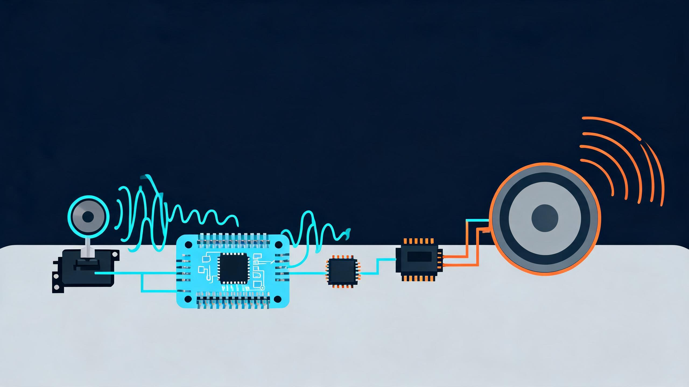
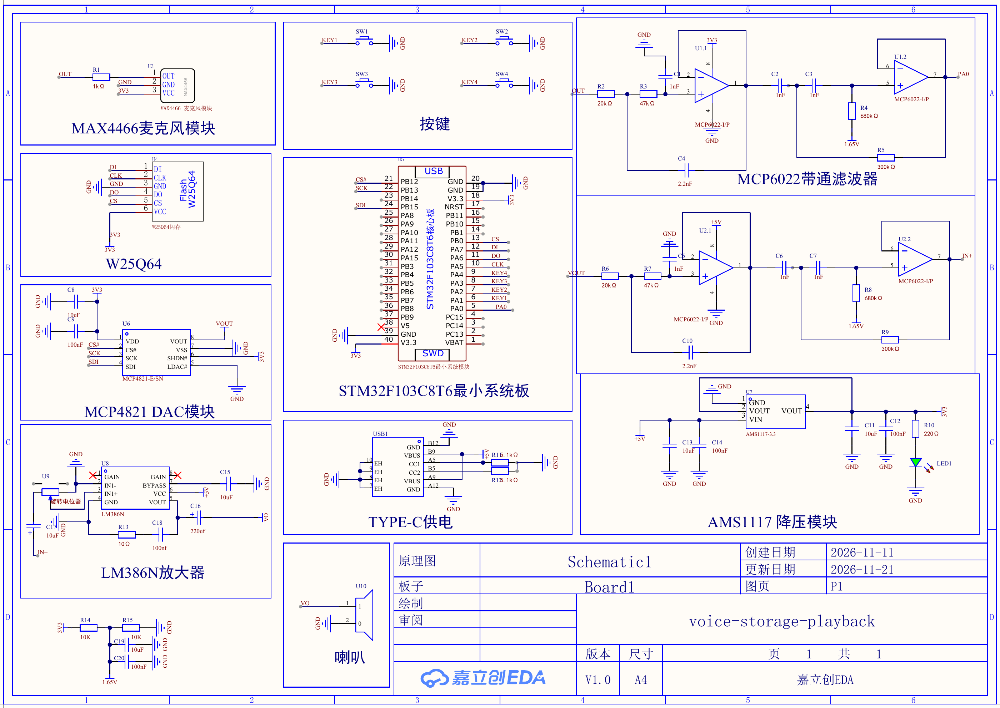

数字化语音存储与回放系统
改编题目 × 完整制作教程
改编自电赛经典 E 题：用 MCU + SPI Flash 取代专用方案，做出一台「按下录音、按下就放」的数字录音机

选题与方案
先把题目读透：改编后的任务书、指标取舍、容量与增益核算，以及一张对齐排针序号的器材清单。
01改编后的题目（任务书）
- 任务与系统总体框图：录音链路、放音链路各由哪些环节组成；
- 四条基本要求、五项发挥内容与 150 分评分结构；
- 与原题在放大器、带通、ADC/DAC、存储时长上的逐项对应。
原题要求分立搭建 46dB/40dB 增益放大器、300Hz~3.4kHz 带通滤波器、8kHz/8bit ADC 与 DAC，偏重模拟电路指标。本题在保留原题「不能使用专用语音芯片」限制的前提下，把链路落到一套人人能搭起来的数字方案上：片内 ADC 采样、SPI Flash 存储、外扩 DAC 恢复，最终成品就是一台可以录声音、然后播放出来的数字录音机。
一、任务
以 STM32F103C8T6 为核心，设计并制作一个数字化语音存储与回放系统。系统框图如下：
flowchart LR
subgraph REC["录音链路"]
MIC["MAX4466 模块
放大器 1 · 3V3"] -->|"R2 1kΩ"| BP1["四阶带通
U1 低通 3.39kHz
U2 高通 300Hz
3V3 供电"]
BP1 --> ADC["STM32 片内 ADC
12bit · 8kHz 采样"]
end
ADC -->|DMA 搬运| MCU["STM32F103C8T6
主控"]
MCU <-->|"SPI1 @18MHz"| FLA[("W25Q64
8MB SPI Flash")]
MCU -->|"SPI2 @9MHz"| DAC["MCP4821
12bit DAC"]
subgraph PLAY["放音链路"]
DAC --> BP2["四阶带通
U13 低通 3.39kHz
U14 高通 300Hz
5V 供电"]
BP2 -->|"C15 10µF 隔直"| POT["U9 10kΩ
音量电位器"]
POT --> PWR["LM386N
增益×20 / 26dB"]
PWR -->|"C17 220µF"| SPK["8Ω 喇叭"]
end
二、基本要求
- 「录音键」开始录音，指示灯亮；再按一次或录满自动停止；
- 录音/播放过程中按「暂停键」暂停、再按继续；
- 「播放键」回放刚录的语音，再按一次停止；
- 「重播键」随时从头重放上一段录音；
- 回放语音清晰、可懂，无明显断续与爆音。
- 采样频率 fs = 8kHz，量化 ≥8bit（本题用 12bit ADC，取高 8 位兼容原题）；
- 录音通道须有带通滤波器，通带 300Hz~3.4kHz（本方案用 MCP6022 搭四阶巴特沃兹带通：二阶低通 + 二阶高通级联，见 3.1）；
- 单次录音时间 ≥ 10 秒；
- 录音、播放均有 LED 状态指示。
- 语音数据存入片外 SPI Flash（W25Q64），断电不丢失；
- 系统上电自检：能检测 Flash 型号（JEDEC ID）并报告故障。
- 不得使用 ISD18xx 等单片语音专用芯片；
- 录音/回放链路中的放大、滤波可用成品模块、运放或 RC 网络实现；
三、发挥部分
- 延长录音时间：录音时间增加至 60 秒以上（容量核算见第 2 章）；
- 提高存储器利用率：容量不变，采用 8bit 截取或 4bit DPCM 压缩延长录音时长；
- 自动音量控制（AGC）：根据输入信号强度自动调节增益，减小声音忽大忽小与削顶失真；
- 多段录音与选段播放：支持 ≥3 段独立录音，用按键选择播放段号；
- 其它（例如：降低噪声电平、播放音量电位器、串口上传波形至 PC 显示等）。
四、评分意见
| 项目 | 内容 | 满分 |
|---|---|---|
| 基本要求 | 设计与总结报告：方案论证、理论计算、电路图、测试数据与分析 | 50 |
| 实际制作完成情况 | 50 | |
| 发挥部分 | 录音时间 ≥ 60 秒 | 10 |
| 提高存储器利用率（压缩存储） | 15 | |
| 自动音量控制 AGC | 10 | |
| 多段录音与选段播放 | 10 | |
| 其它 | 5 |
五、与原题的对应关系
| 原题要求 | 本改编方案 | 说明 |
|---|---|---|
| 放大器 1：46dB 可调 | MAX4466 模块（板载电位器调增益，25~125 倍 = 28~42dB）+ 四阶带通 0dB | 合计 28~42dB；模块内部已完成放大与 VCC/2 偏置，8bit 存储下实测足够 |
| 带通滤波器 300Hz~3.4kHz | 录音端：MCP6022 搭四阶巴特沃兹带通（低通 3.39kHz + 高通 300Hz）；放音端：另一片 MCP6022 搭同参数四阶带通 | 每路为完整带通，通带外每侧 12dB/倍频程滚降 |
| ADC：8kHz / 8bit | 片内 12bit ADC，TIM3 触发 8kHz，软件取高 8bit | 触发与 DMA 与原题思想一致 |
| 存储 ≥10 秒 | W25Q64 8MB，8bit@8kHz 理论可录 ≈1024 秒 | 大幅超出 |
| DAC：8kHz / 8bit | MCP4821 12bit DAC，TIM2 定时 8kHz 恢复 | 8bit 数据左移 4 位送 12bit DAC |
| 放大器 2：40dB 可调 | LM386N（默认 20 倍 = 26dB；①⑧脚接 10µF 可到 200 倍 / 46dB），配 10kΩ 电位器作音量衰减 | 直接推动 8Ω 喇叭 |
| 禁用专用语音芯片 | 保留该限制 | 锻炼采样、存储、恢复的完整链路 |
02总体方案与器材清单
- 从 8kHz × 1Byte = 8KB/s 的数据速率反推容量与录音时长；
- 用一条 dB 账确认「不需要第三级放大器」，并给出增益分配表；
- BOM 与 Blue Pill 40P 排针序号一次对齐，照表接线即可。
2.1 信号链与数据速率
录音链路为 MAX4466（放大器 1）→ R2 1kΩ → MCP6022 四阶带通 300Hz~3.4kHz → PA0；带通本身就把 4kHz 以上压住，因此不再另设 RC 抗混叠网络。放音链路为 MCP4821 → MCP6022 四阶带通 300Hz~3.4kHz → C15 隔直 → 10kΩ 音量电位器 → LM386N → 喇叭。
语音信号带宽取 300Hz~3.4kHz（电话质量），按奈奎斯特定理取采样率 fs = 8kHz（> 2×3.4kHz）。ADC 12bit 采样后取高 8 位存储，数据速率：
8kHz × 1Byte = 8KB/s
W25Q64 总容量 8MB = 8 388 608 Byte，理论可录 ≈1024 秒。即使按原题 16bit 存储也有 512 秒，远超「≥10 秒」的要求。
写入速度校验：Flash 页编程（256Byte）典型 0.7ms、最大 3ms，而 256Byte 语音数据每 32ms 才产生一次，写入完全来得及，只需注意「先擦后录」（见 5.4 节）。
增益还够不够：一条链走的 dB 账
题目要「放大器 1 增益 46dB 可调、放大器 2 增益 40dB 可调」。dB 与倍数的换算是电压比 20lg：
dB = 20 · lg(倍数) （46dB ≈ 200 倍，40dB = 100 倍）
注意别用 10lg（那是功率比），否则会把 42dB 算成 158 倍，越算越乱。整条链的增益分配如下：
| 环节 | 倍数 | dB | 说明 |
|---|---|---|---|
| MAX4466（放大器 1） | 25~125 | 28~42 | 板载电位器，正常说话峰值占 ADC 满量程 70%~90% 即可 |
| 录音四阶带通（U1/U2） | 1 | 0 | 两级 Sallen-Key 都接成跟随器，只滤波不放大 |
| 录音端合计 | 25~125 | 28~42 | 8bit 存储对 42dB 已足够；原题 46dB 是上限指标，实测正常说话可占满 ADC 的 70%~90% |
| MCP4821 输出 | 1 | 0 | 满幅 0~2.048V，中点 1.024V |
| 放音四阶带通（U13/U14） | 1 | 0 | 跟随器，通带内 0dB；中心频率 1.01kHz、带宽 3.1kHz |
| 10kΩ 音量电位器 | 0~1 | 0 ~ −∞ | 信号侧衰减，调到最小即静音 |
| LM386（放大器 2） | 20 / 50 / 200 | 26 / 34 / 46 | 默认 ①⑧悬空 = 20 倍（见 3.5） |
| 放音端合计 | 20~200（可衰减） | 26~46 可调 | 默认 26dB；需要更大音量时按 3.5 表改 ①⑧接法 |
结论：不需要再加第三级放大器。录音端靠 MAX4466 模块的电位器（28~42dB），放音端靠 LM386 的 ①⑧脚配置（默认 26dB，最高 46dB）+ 电位器衰减，两端都能落在题目要求的档位附近。若实测录音偏轻，优先把 MAX4466 电位器拧大，而不是改带通电阻——四阶带通的电阻同时决定截止频率与 Q 值，动了会让通带形状变形。
2.2 器材清单（BOM）
| 模块 | 器件 | 数量 | 备注 |
|---|---|---|---|
| 主控 | STM32F103C8T6 最小系统板（Blue Pill） | 1 | 72MHz，12bit ADC，2 路 SPI |
| 拾音 | MAX4466 驻极体麦克风放大模块 | 1 | 板载电位器调增益，输出偏置 VCC/2 |
| 存储 | W25Q64 模块（或 SOP8 转接） | 1 | 8MB SPI Flash |
| DAC | MCP4821（DIP-8） | 1 | 12bit SPI DAC，内置 2.048V 基准 |
| 录音带通 | MCP6022（DIP-8，双运放）1 片 + 23.2kΩ、43.2kΩ、374kΩ、750kΩ 各 1 只，1nF×3、2.2nF×1，R2 1kΩ | 1 套 | 四阶巴特沃兹带通：二阶低通 3.39kHz + 二阶高通 300Hz；3.3V 供电，输出直流 1.65V（见 3.1） |
| 放音带通 | MCP6022（DIP-8，双运放）1 片 + 与录音带通完全相同的阻容（23.2kΩ、43.2kΩ、374kΩ、750kΩ、1nF×3、2.2nF×1） | 1 套 | 同参数四阶带通，5V 供电；输出经 C15 10µF 隔直送电位器（见 3.4） |
| 偏置/音量 | 10kΩ×2（1.65V 分压）、C13/C16 100nF×2、C15 10µF 电解、U9 10kΩ 电位器 | 1 套 | 1.65V 中点供两路带通的 750kΩ 下端；C15 隔直后接音量电位器 |
| 功放 | LM386N-1（DIP-8）+ C17 220µF 电解 + C14 100nF + R9 10Ω + C12 100nF | 1 | ①⑧悬空 = 20 倍 / 26dB；C17 220µF 耦合喇叭（+ 端朝 LM386），C14 100nF + R9 10Ω 作 Zobel，C12 100nF 接 ⑦脚 |
| 喇叭 | 8Ω 0.5W 小喇叭（或 32Ω 耳机） | 1 | |
| 人机交互 | 轻触按键 ×4、LED ×2（各串 1kΩ） | — | 录音 / 暂停 / 播放 / 重播，录音 / 播放指示 |
| 电源 | USB 充电宝（5V 输出）+ Type-C 数据线 | 1 | 全系统单 5V 供电（见 3.6）；建议选无「小电流自动关机」功能的充电宝 |
| 供电接口 | Type-C 母座（6P 供电型即可，如 TYPE-C-31-M-12）+ R7/R8 5.1kΩ ×2 | 1 | CC1（A5）、CC2（B5）必须各接 5.1kΩ 下拉到 GND，否则多数充电宝/充电器不输出 5V（见 3.6） |
| 稳压 | AMS1117-3.3（U7，SOT-223）+ 10µF×2 + 0.1µF | 1 | 5V → 3.3V，供 Blue Pill、W25Q64、MAX4466、MCP4821、录音带通 U1/U2 |
| 电源指示 | R6 220Ω + LED1 | 1 | 5V 经 220Ω 点亮，上电即知电源是否到位 |
| 其它 | 面包板/洞洞板、杜邦线、10µF/0.1µF 退耦电容若干 | — |
2.3 引脚分配总表（Blue Pill 模块，按排针序号）
本方案直接用 STM32F103C8T6 最小系统板（Blue Pill），板上已带 8MHz 晶振、复位电路和 AMS1117-3.3，因此只需要按 40P 排针序号接线。下表序号是 Blue Pill 排针脚号，不是 LQFP48 芯片脚号，照着模块丝印数即可。
① 信号引脚（软件使用的 GPIO / 外设）
| 功能组 | MCU 引脚（排针序号） | 方向 | 工作模式 | 连接对象 | 说明 |
|---|---|---|---|---|---|
| 模拟输入 | PA0（5） | 输入 | ADC1_IN0 模拟 | 录音四阶带通输出 U2 ⑦脚 | 8kHz 定时触发采样，12bit 右对齐；带通 300Hz~3.4kHz 兼作抗混叠 |
| 按键 | PA1（6） | 输入 | GPIO 输入上拉 | KEY1 → GND | 录音键：开始录音 / 再按结束，软件消抖 20ms |
| PA2（7） | 输入 | GPIO 输入上拉 | KEY2 → GND | 暂停键：录音、播放过程中暂停 / 继续 | |
| PA3（8） | 输入 | GPIO 输入上拉 | KEY3 → GND | 播放键：回放刚录内容 / 再按停止 | |
| PA4（9） | 输入 | GPIO 输入上拉 | KEY4 → GND | 重播键：任意时刻从头重放上一段录音 | |
| 指示灯 | PC13（板载） | 输出 | GPIO 推挽 | 板载 LED（负极接 PC13） | 录音指示，低电平点亮（Blue Pill 板载灯反接） |
| PB1（14） | 输出 | GPIO 推挽 | 1kΩ → LED → GND | 播放指示，高电平点亮 | |
| SPI1 → W25Q64 | PA5（10） | 输出 | SPI1_SCK 复用推挽 | W25Q64 ②脚 CLK | APB2 72MHz ÷ 4 = 18MHz，模式 0 |
| PA6（11） | 输入 | SPI1_MISO 复用 | W25Q64 ④脚 DO | 主机读数据 | |
| PA7（12） | 输出 | SPI1_MOSI 复用推挽 | W25Q64 ①脚 DI | 主机写数据 | |
| PB0（13） | 输出 | GPIO 推挽 | W25Q64 ⑤脚 /CS，10kΩ 上拉 3.3V | Flash 片选，软件控制（不用硬件 NSS） | |
| SPI2 → MCP4821 | PB13（22） | 输出 | SPI2_SCK 复用推挽 | MCP4821 ③脚 SCK | APB1 36MHz ÷ 4 = 9MHz，模式 0，16bit 帧 |
| PB15（24） | 输出 | SPI2_MOSI 复用推挽 | MCP4821 ④脚 SDI | DAC 与 Flash 分用两路 SPI，避免总线冲突；PB14 不用，悬空 | |
| PB12（21） | 输出 | GPIO 推挽 | MCP4821 ②脚 /CS，10kΩ 上拉 3.3V | DAC 片选，CS 上升沿更新输出；⑤脚 /LDAC 直接接地 | |
| 调试/扩展 | PA13（SWDIO） | 双向 | SWDIO | 板上 4P SWD 排针 | 下载与在线调试，必接 |
| PA14（SWCLK） | 双向 | SWCLK | 板上 4P SWD 排针 | 必接 | |
| PA9（30） | 输出 | USART1_TX 复用推挽 | USB-TTL 模块 RX | 可选调试串口 230400bps：打印日志 / 上传波形画图（见 7.4） |
② 电源与地（Blue Pill 排针）
| 排针（序号） | 接法 | 说明 |
|---|---|---|
| 5V（38） | Type-C VBUS（+5V） | 给 LM386、放音带通 U13/U14 供电；也可作为板载稳压输入 |
| 3V3（18 / 40） | 3.3V 电源轨 | 供 W25Q64、MAX4466、MCP4821、录音带通 U1/U2；与外部 U7 输出二选一，切勿并联 |
| GND（19 / 20 / 39） | 公共地 | 所有模块与模拟地单点汇合到 Type-C 入口 |
| NRST（17） | 可接复位按键 | 板上已有 10kΩ 上拉与 0.1µF，不接也能工作 |
| BOOT0 / BOOT1 | 板上跳线保持默认（BOOT0=0） | 正常从 Flash 启动，不需要额外接线 |
- ADC 输入选 PA0~PA7：F103 的 12bit ADC1 只挂在 APB2 的 PA 口，选 PA0 直接对应通道 IN0，避免重映射麻烦；
- DAC 单独用 SPI2（PB13/PB15）：播放时 8kHz 中断发 DAC 帧与主循环读 Flash 若共总线会冲突，分成两路后互不干扰，代码简单得多——这是本题最值得吸取的工程经验；
- 按键/LED 都挑了富余的简单 IO：避开 SWD 与串口，PB0/PB12 分别做 Flash、DAC 片选；剩余 PB10/PB11、PB8/PB9 等建议引到一排 4P 排针备用（发挥部分扩展用）。
硬件实现
从三张接线表到一块能打样的板：录音与放音两条四阶带通、1.65V 中点、3V3/5V 供电分配，以及原理图与 PCB 的落地流程。
03硬件电路设计
- 录音通道：MAX4466 → U1 低通 3.39kHz → U2 高通 300Hz → PA0；
- 放音通道：MCP4821 → U13/U14 四阶带通 → C15 → 10kΩ 电位器 → LM386；
- 四个必须记住的细节：750kΩ 接 1.65V、U1/U2 用 3V3、U13/U14 用 5V、Type-C 的 CC 下拉。
3.1 录音通道：MAX4466 → 四阶带通（U1/U2）→ ADC
原题框图的录音链路是「拾音器 → 放大器 1 → 带通滤波器 → ADC」。对应到本方案：MAX4466 模块承担放大器 1（增益 25~125 倍，输出偏置 1.65V），后面用 MCP6022 的两个运放单元搭四阶巴特沃兹带通：低通级（U1）做 3.39kHz 二阶低通，高通级（U2）做 300Hz 二阶高通，级联后通带 300Hz~3.4kHz，再经 R2 送 PA0。
flowchart LR M["MAX4466 模块
放大器 1 · 3V3 · 输出 1.65V"] -->|"R2 1kΩ"| L["二阶低通 U1
f0=3.39kHz · Q≈0.707"] L -->|"①脚输出"| H["二阶高通 U2
f0=300Hz"] H -->|"⑦脚 · 直流 1.65V"| P["PA0 · ADC1_IN0"] V["1.65V 中点
R10 10k / R11 10k"] -.->|"R5 750kΩ"| H
为什么用四阶、为什么两级都接成跟随器。二阶带通的滚降只有 ±6dB/倍频程，300Hz 以下的手持噪声和 4kHz 以上的齿音压不干净；四阶（低通、高通各二阶）把两侧滚降提高到 ±12dB/倍频程。两级都接成单位增益跟随器（①=②、⑥=⑦），带通整体增益 0dB，增益全部交给 MAX4466 的电位器——这样滤波器的 Q 值只由阻容决定，调音量不会改变通带形状。
电路一：二阶低通（U1，3.39kHz）
R2 1kΩ ──[R3 23.2kΩ]──●──[R4 43.2kΩ]──●──── ③脚 (+IN A)
│ │
[C5 2.2nF] [C2 1nF]
│ │
①脚 (OUT A) GND
│
└── ②脚 (IN−A) ← ①=② 跟随器，单位增益
f0 = 1/(2π√(R3·R4·C2·C5)) ≈ 3.39kHz
Q = √(R3·R4·C2·C5) / [C2·(R3+R4)] ≈ 0.707
电路二：二阶高通（U2，300Hz）
①脚 (OUT A) ──[C3 1nF]──●──[C4 1nF]──●──── ⑤脚 (+IN B)
│ │
[R1 374kΩ] [R5 750kΩ]
│ │
⑦脚 (OUT B) 1.65V 中点
│
└── ⑥脚 (IN−B) ← ⑥=⑦ 跟随器，单位增益
f0 = 1/(2π√(R1·R5·C3·C4)) ≈ 300Hz
1.65V 中点（两路带通共用）
3V3 ──[R10 10kΩ]──●──[R11 10kΩ]── GND
│
[C13 100nF] ∥ [C16 100nF]
│
GND
R10/R11 把 3.3V 分成 1.65V，C13/C16 滤掉电源噪声。这个 1.65V 不是装饰，它是高通级 750kΩ 电阻唯一的交流参考点：R5 下端必须接这里，不能接地。
元件值与频率校验
| 位号 | 值 | 作用 | 计算 |
|---|---|---|---|
| R3（R15） | 23.2kΩ | 低通第一节电阻 | f0 = 1/(2π√(23.2k×43.2k×1n×2.2n)) ≈ 3.39kHz Q ≈ 0.707（巴特沃兹） |
| R4（R16） | 43.2kΩ | 低通第二节电阻 | |
| C2（C19） | 1nF | ③脚到 GND | |
| C5（C22） | 2.2nF | ①脚反馈到 R3/R4 结点 | |
| C3（C20） | 1nF | 高通第一节电容 | f0 = 1/(2π√(374k×750k×1n×1n)) ≈ 300Hz |
| C4（C21） | 1nF | 高通第二节电容 | |
| R1（R14） | 374kΩ | 高通反馈电阻（C3/C4 结点 → ⑦脚） | |
| R5（R17） | 750kΩ | ⑤脚到 1.65V 中点 | |
| R10 / R11 | 10kΩ ×2 | 1.65V 分压 | 3.3V / 2 = 1.65V |
| C13 / C16 | 100nF ×2 | 中点滤波 | — |
| R2 | 1kΩ | MAX4466 输出隔离 | 隔离模块输出与滤波电容，防止模块自激 |
括号内为放音通道的对应位号（U13/U14），元件值与录音通道完全相同。
两级级联后通带 300Hz~3.4kHz，两侧各 12dB/倍频程滚降；通带内增益 1（0dB），输出直流电平 1.65V，正好落在 3.3V ADC 的中点。
接线要点
- 录音带通 U1、U2 的 ⑧脚接 3.3V，不能接 5V：输出最高只能到 3.3V，接 5V 会超过 STM32 ADC 的输入上限；⑧脚旁就近放 0.1µF，④脚接 GND；
- MAX4466 的 VCC 接 3.3V，GND 共地，OUT 经 R2 1kΩ 进低通；R2 用来隔离模块输出与滤波电容，避免模块内部放大器直接驱动容性负载而自激；
- U2 ⑦脚 → PA0，直流 1.65V；这条线是全板最敏感的模拟线，越短越好；
- 两节都接成跟随器，没有增益电阻，所以不需要隔直电容；若误接成同相放大，会同时改变 Q 值和直流工作点；
- 调试目标：安静时 U2 ⑦脚稳定在 1.65V，正常说话时 ADC 读数在 300~3800 之间摆动（见第 6 章）。
- 750kΩ 下端接 GND：高通级失去 1.65V 偏置，输出被钉在 0V 附近，ADC 只有单边波形；必须接 R10/R11 分压点；
- U1/U2 从 5V 供电：输出摆幅可到 5V，直接把 ADC 引脚打过压；必须用 3.3V；
- ①=② 或 ⑥=⑦ 没短接：Sallen-Key 的反馈断掉后运放开环，输出直接顶轨；两处必须短接。
3.2 存储器：W25Q64 接线
| W25Q64 模块引脚 | 接至 | 备注 |
|---|---|---|
| ① DI（MOSI） | PA7（12） | 主机写数据 |
| ② CLK | PA5（10） | SPI1 SCK，18MHz，模式 0 |
| ③ GND | GND | 与 0.1µF 退耦电容共地 |
| ④ DO（MISO） | PA6（11） | 主机读数据 |
| ⑤ /CS | PB0（13） | 软件片选，接 10kΩ 上拉到 3.3V |
| ⑥ VCC | 3.3V | 与 GND 间并 0.1µF |
模块内部已把 /WP、/HOLD 处理为高电平；若用裸芯片（SOP-8），需把 ③ /WP、⑦ /HOLD 上拉到 3.3V，否则写保护打不开、数据写不进去。
关键参数：页 = 256Byte（页编程不可跨页）、扇区 = 4KB（擦除最小单位，典型 45ms）、SPI 模式 0、最高时钟远高于 18MHz。JEDEC ID 应读到 0xEF4017（厂商 EFh = Winbond，容量 17h = 8MB）。
3.3 DAC：MCP4821 接线与时序
| 引脚 | 名称 | 接至 | 备注 |
|---|---|---|---|
| ① | VDD | 3.3V | 与 GND 间并 0.1µF；供电 3.3V 时逻辑电平与 STM32 完全匹配 |
| ② | /CS | PB12（21） | 接 10kΩ 上拉；上升沿锁存并更新输出 |
| ③ | SCK | PB13（22） | SPI2 时钟，9MHz |
| ④ | SDI | PB15（24） | SPI2 MOSI |
| ⑤ | /LDAC | GND | 接地：CS 上升沿即更新，不需要单独锁存信号 |
| ⑥ | /SHDN | 3.3V | 拉高为正常输出；拉低会关断输出 |
| ⑦ | VSS | GND | |
| ⑧ | VOUT | → 放音带通输入 | 0~2.048V，中点 1.024V |
MCP4821 每次写入是一个 16bit 帧（SPI 模式 0，MSB 在前）：
| Bit15 | Bit14 | Bit13 | Bit12 | Bit11~0 |
|---|---|---|---|---|
| 0（固定） | 0（固定） | /GA：1 = 增益 ×1 | /SHDN：1 = 输出有效 | 12bit 数据 D11~D0 |
配置命令取 0x3000（Bit13=1 选 1 倍增益、Bit12=1 正常输出），输出电压 VOUT = 2.048V × D/4096。把 8bit 采样左移 4 位送入即可：0x80 → 2048 → 1.024V（静音中点）。不要用 2 倍增益：2 倍时满幅 4.096V，超过 3.3V 供电轨，输出会顶死。
3.4 放音滤波：MCP6022(U13/U14) 四阶带通 + C15 隔直
DAC 输出是阶梯波，叠加 8kHz 及其谐波的镜像分量，需要低通平滑；同时为了和录音端听感一致，放音端也做成同参数的四阶巴特沃兹带通（低通 3.39kHz + 高通 300Hz）。整条链：
flowchart LR A["MCP4821 VOUT
0~2.048V · 中点 1.024V"] --> L["二阶低通 U13
f0=3.39kHz"] L --> H["二阶高通 U14
f0=300Hz · 5V 供电"] H -->|"⑦脚 · 1.65V"| C["C15 10µF 电解
+ 端朝运放"] C --> P["U9 10kΩ 音量电位器
①→②→③(GND)"] P -->|"②脚滑动端"| G["LM386 ③脚"]
为什么中间要加 C15：DAC 和滤波器的直流工作点在 1.024~1.65V，而电位器下端接地，直接连会有一条直流电流流过电位器，转到最小音量时产生「沙沙」声，还会让 LM386 输入端偏离 0V。C15 10µF 把直流挡住，交流信号照常通过；它与 10kΩ 电位器形成 1/(2π×10k×10µF) ≈ 1.6Hz 的高通，远低于音频下限，不影响听感。电解电容正极朝运放（U14 ⑦脚）一侧。
电位器接法：U9 ①脚接 C15 正极，③脚接地，②脚（滑动端）接 LM386 ③脚。这是标准的信号侧分压，转动时改变送到功放的幅度，而不是串在喇叭回路里。
3.5 功放：LM386N
- ③脚（+输入）：接音量电位器 U9 的②脚（滑动端）；②、④脚接地；
- ⑥脚：+5V，入口就近放 0.1µF 退耦；若出现低频自激「扑扑」声，再并一颗 100µF 电解；
- ⑦脚：经 C12 100nF 到地，滤掉电源纹波带来的「嗡嗡」声；
- ①、⑧脚悬空：增益 20 倍（26dB），底噪最低，5V 供电下推 8Ω 喇叭足够；需要更大音量时按表改接；
- ⑤脚输出 → C17 220µF 电解（正极朝 LM386）→ 8Ω 喇叭 → GND；⑤脚另经 C14 100nF + R9 10Ω 串联到地，构成 Zobel 网络，抵消喇叭音圈的感性负载，防高频自激；
- 5V 供电下输出摆幅约 2~2.5Vpp，音量比 9V 小；LM386 增益较大时注意喇叭线远离麦克风线，避免自激啸叫。
| ①、⑧脚之间的接法 | 增益 | dB | 适用场合 |
|---|---|---|---|
| 悬空（什么都不接） | 20× | 26dB | 本方案默认，底噪最低，5V 供电下足够 |
| 串 1.2kΩ + 10µF | 约 50× | 34dB | 声音偏小、又不想引入太多噪声时 |
| 直接接 10µF | 200× | 46dB | 声音最大，但底噪与自激风险同步上升 |
原理：LM386 内部 ①⑧脚之间是三个 1.35kΩ 串联的反馈电阻，短路掉一部分即可提高增益。①⑧脚引线要短，长了容易自激。不要用 10kΩ 电位器串在 ①⑧脚调增益——滑动端噪声会直接进入音频通路，音量调节请用前面的 U9 电位器。
3.6 按键、指示灯与电源汇总（充电宝 + Type-C 单电源）
- KEY1（PA1）~KEY4（PA4）：录音、暂停、播放、重播，按键一端接地、一端接引脚，使能内部上拉，按下为低；
- LED：PC13（录音指示，板载 LED、低电平亮）、PB1（播放指示，串 1kΩ 高电平亮）；LED1 电源灯由 5V 经 R6 220Ω 点亮；
- 供电接口：Type-C 母座（6P 供电型）：VBUS 取 A9/B9，GND 取 A12/B12，CC1（A5）经 R7 5.1kΩ 下拉到 GND，CC2（B5）经 R8 5.1kΩ 下拉到 GND，DP/DM 悬空；
- 电源：充电宝 Type-C 线 → 板上母座 → U7 AMS1117-3.3 稳出 3.3V（供 Blue Pill、W25Q64、MAX4466、MCP4821、录音带通 U1/U2）；5V 直接供放音带通 U13/U14 与 LM386；全部共地。整机一根 Type-C 线即插即用。
- 漏接这两个电阻 → 表现为「插上线毫无反应」，是最常见的 Type-C 供电翻车点；
- 只需要 5V 供电时选 6P 母座即可（VBUS×4、GND×4 + CC1/CC2），DP/DM 不接；
- VBUS 入口并 100µF 电解 + 0.1µF；若想更稳，可在 VBUS 串 0.5A 自恢复保险丝 + SS34 肖特基二极管防倒灌（最小板 USB 口与 Type-C 同时供电时需要，只用一个口可省）。
- 选没有小电流自动关机功能（或带「小电流/耳机模式」）的充电宝，最省事；
- 在 5V 与 GND 之间并一个 100~150Ω/0.5W 假负载电阻（约增加 33~50mA），整机维持 >100mA；
- 软件上让待机 LED 周期闪烁帮助不大（电流太小），但录音/播放时喇叭工作电流大，一般不会掉电。
04实板原理图
实板的元件位号、参数和连线以原理图为准。


软件与联调
五状态机加三份驱动：录音「中断出数据、主循环搬数据」，播放「中断取数、主循环预读」，最后按七步调试法逐级验证。
05软件设计（含完整关键代码）
- CubeMX 关键配置与五状态机（录音、播放各带暂停态）；
- W25Q64 与 MCP4821 驱动：先擦后写、16bit 帧格式；
- 录音 DMA 半满/全满搬运、播放双缓冲半程预读、按键非阻塞消抖。
5.1 开发环境与总体结构
使用 STM32CubeMX + Keil MDK（或 STM32CubeIDE）+ HAL 库。CubeMX 关键配置如下，其余按默认：
| 外设 | 配置 |
|---|---|
| RCC / 时钟 | HSE 8MHz → PLL×9 → SYSCLK 72MHz，APB1 36MHz（定时器时钟 72MHz） |
| ADC1 | 通道 0（PA0），12bit 右对齐，外部触发源 TIM3_TRGO，DMA Continuous Requests = Enable，Scan/Continuous = Disable |
| TIM3 | PSC=0，ARR=8999（72M/9000 = 8kHz），CR2.TRGO = Update → 触发 ADC |
| TIM2 | PSC=0，ARR=8999，使能更新中断（NVIC）→ 8kHz 送 DAC |
| SPI1 | Full-Duplex Master，8bit，Mode 0，MSB First，分频 4（72/4 = 18MHz） |
| SPI2 | Transmit-Only Master，16bit，Mode 0，分频 4（36/4 = 9MHz） |
| DMA1_CH1 | ADC1，Circular 模式，Half Word，优先级 High |
| GPIO | PB0/PB12 推挽输出（Flash/DAC 片选）；PC13/PB1 推挽（LED）；PA1~PA4 输入上拉（KEY1 录音 / KEY2 暂停 / KEY3 播放 / KEY4 重播） |
软件是一个五状态机（录音/播放各带一个暂停态），录音和播放都是「中断出数据、主循环搬数据」的流水结构：
stateDiagram-v2
[*] --> IDLE
IDLE --> RECORD : KEY1 录音键
先擦扇区, 再启动采样
RECORD --> REC_PAUSE : KEY2 暂停
停触发, 缓冲冲刷完
REC_PAUSE --> RECORD : KEY2 继续
REC_PAUSE --> IDLE : KEY1 结束录音
RECORD --> IDLE : 录满 10s / KEY1 再按
IDLE --> PLAY : KEY3 播放键 / KEY4 重播键
PLAY --> PLAY_PAUSE : KEY2 暂停
定时器停, 断点冻结
PLAY_PAUSE --> PLAY : KEY2 继续
PLAY_PAUSE --> IDLE : KEY3 结束
PLAY --> IDLE : 播放完毕 / KEY3 再按
PLAY --> PLAY : KEY4 重播
回到开头重新放
5.2 W25Q64 驱动（SPI1，8bit 帧）
w25q64.c#include "w25q64.h"
#include "spi.h"
#define W25_CS_LOW() HAL_GPIO_WritePin(FLASH_CS_GPIO_Port, FLASH_CS_Pin, GPIO_PIN_RESET)
#define W25_CS_HIGH() HAL_GPIO_WritePin(FLASH_CS_GPIO_Port, FLASH_CS_Pin, GPIO_PIN_SET)
#define CMD_JEDEC_ID 0x9F
#define CMD_WRITE_EN 0x06
#define CMD_READ_SR1 0x05
#define CMD_SECTOR_ERASE 0x20 /* 4KB 扇区擦除, 典型 45ms */
#define CMD_PAGE_PROG 0x02 /* 页编程, 不可跨 256B 页边界 */
#define CMD_READ_DATA 0x03
static uint8_t rx;
static uint8_t Spi1_Xfer(uint8_t dat)
{
HAL_SPI_TransmitReceive(&hspi1, &dat, &rx, 1, 20);
return rx;
}
/* 连续收发: 比逐字节 Xfer 快 ~5 倍(省掉每字节的 HAL 状态机开销) */
static void Spi1_Send(const uint8_t *buf, uint16_t len)
{
HAL_SPI_Transmit(&hspi1, (uint8_t *)buf, len, 100);
}
static void Spi1_Recv(uint8_t *buf, uint16_t len)
{
HAL_SPI_Receive(&hspi1, buf, len, 100); /* 全双工主机下 HAL 自动发 0xFF 时钟 */
}
/* 读 JEDEC ID: 正常返回 0xEF4017 (Winbond / 8MB) */
uint32_t W25_ReadID(void)
{
uint32_t id;
W25_CS_LOW();
Spi1_Xfer(CMD_JEDEC_ID);
id = (uint32_t)Spi1_Xfer(0xFF) << 16;
id |= (uint32_t)Spi1_Xfer(0xFF) << 8;
id |= (uint32_t)Spi1_Xfer(0xFF);
W25_CS_HIGH();
return id;
}
void W25_WriteEnable(void)
{
W25_CS_LOW();
Spi1_Xfer(CMD_WRITE_EN);
W25_CS_HIGH();
}
/* 轮询状态寄存器 bit0 (BUSY), 擦除/写完自动清零; 带超时, Flash 虚焊时不死等 */
void W25_WaitBusy(void)
{
uint8_t sr;
uint32_t t0 = HAL_GetTick();
W25_CS_LOW();
Spi1_Xfer(CMD_READ_SR1);
do {
sr = Spi1_Xfer(0xFF);
if (HAL_GetTick() - t0 > 3000) break; /* 超时 3s 强制退出, 交由上层报错 */
} while (sr & 0x01);
W25_CS_HIGH();
}
void W25_SectorErase(uint32_t addr)
{
W25_WriteEnable();
W25_CS_LOW();
Spi1_Xfer(CMD_SECTOR_ERASE);
Spi1_Xfer((addr >> 16) & 0xFF);
Spi1_Xfer((addr >> 8) & 0xFF);
Spi1_Xfer( addr & 0xFF);
W25_CS_HIGH();
W25_WaitBusy();
}
/* addr 必须为 256 的整数倍, len ≤ 256 */
void W25_PageProgram(uint32_t addr, uint8_t *buf, uint16_t len)
{
W25_WriteEnable();
W25_CS_LOW();
Spi1_Xfer(CMD_PAGE_PROG);
Spi1_Xfer((addr >> 16) & 0xFF);
Spi1_Xfer((addr >> 8) & 0xFF);
Spi1_Xfer( addr & 0xFF);
Spi1_Send(buf, len);
W25_CS_HIGH();
W25_WaitBusy();
}
void W25_ReadData(uint32_t addr, uint8_t *buf, uint16_t len)
{
W25_CS_LOW();
Spi1_Xfer(CMD_READ_DATA);
Spi1_Xfer((addr >> 16) & 0xFF);
Spi1_Xfer((addr >> 8) & 0xFF);
Spi1_Xfer( addr & 0xFF);
Spi1_Recv(buf, len);
W25_CS_HIGH();
}5.3 MCP4821 驱动（SPI2，16bit 帧）
mcp4821.c#include "mcp4821.h"
#include "spi.h"
/* 16bit 帧: [0 | 0 | /GA=1(增益x1) | /SHDN=1(输出有效) | D11..D0] */
#define MCP4821_CMD_ACTIVE 0x3000
void MCP4821_Write(uint16_t dat12)
{
uint16_t frame = MCP4821_CMD_ACTIVE | (dat12 & 0x0FFF);
HAL_GPIO_WritePin(DAC_CS_GPIO_Port, DAC_CS_Pin, GPIO_PIN_RESET);
HAL_SPI_Transmit(&hspi2, (uint8_t *)&frame, 1, 5); /* SPI2 配置为 16bit */
HAL_GPIO_WritePin(DAC_CS_GPIO_Port, DAC_CS_Pin, GPIO_PIN_SET); /* 上升沿更新输出 */
}5.4 录音通道：TIM3 触发 ADC + DMA 循环搬运
DMA 在 512 点缓冲上循环，半传输/全传输中断各通知主循环 256 点（正好一个 Flash 页）。中断里只置标志，Flash 写入在主循环完成——这是保证不丢数据的经典分工。ADC 以 1.65V 为静音中点（≈2048），右移 4 位后中点变成 0x80 = 128，正好对应 DAC 的 2048 中点，录放两端电平天然对齐。
record.c#include "main.h"
#define BLOCK_SAMPLES 256 /* 半缓冲 = 1 个 Flash 页 */
#define REC_START_ADDR 0x000000 /* 录音区起始地址 */
#define REC_BYTES_MAX 80000 /* 10 秒 @ 8KB/s, 改这里可加长 */
extern ADC_HandleTypeDef hadc1;
extern TIM_HandleTypeDef htim3;
volatile uint16_t adc_block[2][BLOCK_SAMPLES]; /* DMA 循环缓冲 */
volatile uint8_t blk_ready[2] = {0, 0}; /* 半/全传输标志 */
uint32_t flash_addr = REC_START_ADDR;
uint32_t rec_bytes = 0;
uint8_t recording = 0;
uint8_t rec_paused = 0;
void HAL_ADC_ConvHalfCpltCallback(ADC_HandleTypeDef *hadc) { blk_ready[0] = 1; }
void HAL_ADC_ConvCpltCallback(ADC_HandleTypeDef *hadc) { blk_ready[1] = 1; }
/* 按键触发: 先擦后录 */
void Record_Start(void)
{
uint32_t i, n_sec = (REC_BYTES_MAX + 4095) / 4096;
HAL_GPIO_WritePin(LED_REC_GPIO_Port, LED_REC_Pin, GPIO_PIN_RESET); /* 灯亮 */
for (i = 0; i < n_sec; i++) /* 20 扇区典型约 1s（最坏 ~8s，见 5.4 注） */
W25_SectorErase(REC_START_ADDR + i * 4096);
flash_addr = REC_START_ADDR;
rec_bytes = 0;
rec_paused = 0;
blk_ready[0] = blk_ready[1] = 0;
recording = 1;
HAL_ADC_Start_DMA(&hadc1, (uint32_t *)adc_block, BLOCK_SAMPLES * 2);
HAL_TIM_Base_Start(&htim3); /* 8kHz 触发开始 */
}
/* 主循环调用: 把采好的块写入 Flash */
void Record_Task(void)
{
uint8_t b, page[256];
uint16_t i;
for (b = 0; b < 2; b++) {
if (!blk_ready[b]) continue;
blk_ready[b] = 0;
for (i = 0; i < 256; i++) /* 12bit 取高 8bit, 兼容原题 8bit 规格 */
page[i] = (uint8_t)(adc_block[b][i] >> 4);
W25_PageProgram(flash_addr, page, 256);
flash_addr += 256;
rec_bytes += 256;
}
}
/* KEY2 暂停: 停掉 8kHz 触发即停采样, 已采完的块照常写完 */
void Record_Pause(void)
{
HAL_TIM_Base_Stop(&htim3);
Record_Task(); /* 冲刷缓冲中剩余的块 */
rec_paused = 1; /* 暂停瞬间的不足 256 点尾数被丢弃(≤32ms) */
}
void Record_Resume(void)
{
HAL_ADC_Stop_DMA(&hadc1); /* 停 DMA, 丢弃暂停前残留在半缓冲里的旧样本 */
blk_ready[0] = blk_ready[1] = 0;
rec_paused = 0;
HAL_ADC_Start_DMA(&hadc1, (uint32_t *)adc_block, BLOCK_SAMPLES * 2); /* 从头重启循环缓冲 */
HAL_TIM_Base_Start(&htim3); /* 从暂停处继续写同一地址 */
}
void Record_Stop(void)
{
HAL_TIM_Base_Stop(&htim3);
Record_Task(); /* 冲刷: 已采满但未写入的块别丢(≤32ms 尾巴) */
HAL_ADC_Stop_DMA(&hadc1);
recording = 0;
HAL_GPIO_WritePin(LED_REC_GPIO_Port, LED_REC_Pin, GPIO_PIN_SET); /* 灯灭 */
}5.5 播放通道：TIM2 8kHz 中断送 DAC + 主循环预读 Flash
下面的双缓冲示例中，TIM2 中断（8kHz）只从当前缓冲取数写 DAC，播完一块时若 buf_ready 已置位就立即切到下一块；主循环在当前缓冲播到一半（32ms）时就把下一块 512Byte 从 Flash 预读进备用缓冲。逐字节 HAL 读一块约 1ms，远小于 32ms 余量，中断侧在备用缓冲尚未就绪时输出静音。
#include "main.h"
#define BUF_LEN 512 /* 双缓冲各 512B, 可播 64ms */
#define RAMP_N 400 /* 50ms 起始斜坡, 消除爆音 */
extern TIM_HandleTypeDef htim2;
uint8_t play_buf[2][BUF_LEN];
volatile uint8_t active = 0; /* 中断正在读的缓冲号 */
volatile uint16_t play_pos = 0;
volatile uint8_t buf_ready = 0; /* 备用缓冲已预读完成, 可供切换 */
volatile uint8_t playing = 0;
volatile uint8_t play_paused = 0;
uint32_t play_addr = 0, play_end = 0;
uint16_t ramp = 0; /* 起始音量斜坡计数 */
static uint16_t last_d = 2048; /* 最近一次送 DAC 的值, 停止时淡出用 */
/* TIM2 8kHz 更新中断: 每 125us 恢复一个采样点 */
void HAL_TIM_PeriodElapsedCallback(TIM_HandleTypeDef *htim)
{
if (htim != &htim2 || !playing) return;
if (play_pos >= BUF_LEN) { /* 当前块播完: 切换到下一块 */
if (!buf_ready) { /* 主循环还没来得及预读: 输出静音中点 */
MCP4821_Write(2048);
return;
}
active ^= 1;
play_pos = 0;
buf_ready = 0;
}
uint16_t d = ((uint16_t)play_buf[active][play_pos++]) << 4; /* 8bit→12bit */
if (ramp < RAMP_N) { /* 起始音量斜坡, 防爆音 */
d = 2048 + (int32_t)(d - 2048) * ramp / RAMP_N;
ramp++;
}
last_d = d;
MCP4821_Write(d);
}
void Play_Start(void) /* 播放与重播共用: 都从头开始 */
{
play_paused = 0;
play_addr = REC_START_ADDR;
play_end = REC_START_ADDR + rec_bytes; /* 回放刚录的长度 */
active = 0;
play_pos = 0; /* 从预读的第一块第 0 点开始播 */
buf_ready = 0;
ramp = 0;
playing = 1;
W25_ReadData(play_addr, (uint8_t *)play_buf[0], BUF_LEN); /* 预读第一块 */
play_addr += BUF_LEN;
HAL_GPIO_WritePin(LED_PLAY_GPIO_Port, LED_PLAY_Pin, GPIO_PIN_SET); /* 灯亮(高电平点亮) */
HAL_TIM_Base_Start_IT(&htim2);
}
/* 主循环调用: 播到半程就预读下一块(打断零等待), 判断结束 */
void Play_Task(void)
{
if (play_addr >= play_end && play_pos >= BUF_LEN && !buf_ready) {
Play_Stop(); /* 最后一块播完 */
return;
}
if (play_pos < BUF_LEN / 2 || buf_ready) return; /* 半程预读, 给 SPI 留 32ms 余量 */
uint16_t n = BUF_LEN;
if (play_end - play_addr < BUF_LEN) /* 最后不足一块 */
n = play_end - play_addr;
W25_ReadData(play_addr, (uint8_t *)play_buf[active ^ 1], n);
if (n < BUF_LEN) /* 不足处补静音中点 */
memset(&play_buf[active ^ 1][n], 0x80, BUF_LEN - n);
play_addr += n;
buf_ready = 1; /* 通知中断: 下一块已就绪 */
}
/* KEY2 暂停: 停掉 8kHz 定时器, play_pos 冻结在断点处 */
void Play_Pause(void)
{
HAL_TIM_Base_Stop_IT(&htim2);
play_paused = 1;
}
void Play_Resume(void) /* 从断点继续 */
{
play_paused = 0;
HAL_TIM_Base_Start_IT(&htim2);
}
void Play_Stop(void)
{
uint8_t i;
for (i = 1; i <= 40; i++) { /* 40 级快速淡出到静音中点(约 0.5ms), 防「啪」声 */
MCP4821_Write(2048 + (int32_t)(last_d - 2048) * (40 - i) / 40);
}
HAL_TIM_Base_Stop_IT(&htim2);
playing = 0;
play_paused = 0;
MCP4821_Write(2048); /* 归静音中点 */
HAL_GPIO_WritePin(LED_PLAY_GPIO_Port, LED_PLAY_Pin, GPIO_PIN_RESET); /* 灯灭 */
}5.6 按键与主状态机
main.c#include "main.h"
typedef enum { ST_IDLE, ST_REC, ST_REC_PAUSE, ST_PLAY, ST_PLAY_PAUSE } State;
State state = ST_IDLE;
static uint8_t key[4] = {0}; /* key[0..3] = KEY1..KEY4 本轮按键事件 */
/* 非阻塞消抖: 每键一个小状态机, 按下沿 20ms 后确认一次事件, 绝不死等松手——
否则按住按键时主循环被卡死, 录音/播放数据流会断 */
static GPIO_TypeDef *key_port[4] = { KEY1_GPIO_Port, KEY2_GPIO_Port, KEY3_GPIO_Port, KEY4_GPIO_Port };
static uint16_t key_pin [4] = { KEY1_Pin, KEY2_Pin, KEY3_Pin, KEY4_Pin };
static void Key_Scan(void)
{
static uint8_t stat[4] = {0}; /* 0=空闲 1=消抖中 2=等释放 */
static uint32_t t0[4] = {0};
uint8_t i;
key[0] = key[1] = key[2] = key[3] = 0;
for (i = 0; i < 4; i++) {
uint8_t down = (HAL_GPIO_ReadPin(key_port[i], key_pin[i]) == GPIO_PIN_RESET);
switch (stat[i]) {
case 0: if (down) { stat[i] = 1; t0[i] = HAL_GetTick(); } break;
case 1: if (!down) stat[i] = 0; /* 抖动, 丢弃 */
else if (HAL_GetTick() - t0[i] >= 20) { key[i] = 1; stat[i] = 2; } break;
case 2: if (!down) stat[i] = 0; /* 已释放, 归位 */
break;
}
}
}
int main(void)
{
HAL_Init();
SystemClock_Config();
MX_GPIO_Init();
MX_DMA_Init();
MX_ADC1_Init();
MX_SPI1_Init();
MX_SPI2_Init();
MX_TIM3_Init();
MX_TIM2_Init();
/* 上电自检: Flash 不在则慢闪报警 */
if (W25_ReadID() != 0xEF4017UL) {
while (1) {
HAL_GPIO_TogglePin(LED_PLAY_GPIO_Port, LED_PLAY_Pin);
HAL_Delay(150);
}
}
MCP4821_Write(2048); /* DAC 置静音中点 */
while (1)
{
Key_Scan();
switch (state)
{
case ST_IDLE:
if (key[0]) { Record_Start(); state = ST_REC; }
else if (key[2] && rec_bytes) { Play_Start(); state = ST_PLAY; }
else if (key[3] && rec_bytes) { Play_Start(); state = ST_PLAY; } /* 重播 */
break;
case ST_REC:
Record_Task();
if (rec_bytes >= REC_BYTES_MAX) { Record_Stop(); state = ST_IDLE; }
else if (key[0]) { Record_Stop(); state = ST_IDLE; } /* 再按=结束 */
else if (key[1]) { Record_Pause(); state = ST_REC_PAUSE; }
break;
case ST_REC_PAUSE: /* 录音灯闪烁提示暂停中 */
HAL_GPIO_TogglePin(LED_REC_GPIO_Port, LED_REC_Pin);
HAL_Delay(120);
if (key[1]) { Record_Resume(); state = ST_REC; }
else if (key[0]) { Record_Stop(); state = ST_IDLE; }
break;
case ST_PLAY:
if (key[3]) { Play_Start(); break; } /* 重播: 回到开头重放 */
Play_Task();
if (key[2]) Play_Stop(); /* 播放键再按 = 停止 */
else if (key[1]) { Play_Pause(); state = ST_PLAY_PAUSE; break; }
if (!playing) state = ST_IDLE; /* 自然播完或已停止 */
break;
case ST_PLAY_PAUSE:
if (key[1]) { Play_Resume(); state = ST_PLAY; } /* 断点续播 */
else if (key[3]) { Play_Start(); state = ST_PLAY; } /* 暂停中重播 */
else if (key[2]) { Play_Stop(); state = ST_IDLE; }
break;
}
}
}FLASH_CS、PB12 标签 DAC_CS、PC13 标签 LED_REC、PB1 标签 LED_PLAY、PA1~PA4 标签 KEY1~KEY4，生成代码后上面文件即可直接编译。06调试步骤与常见问题排查
- 七步分步调试：人机 → Flash → DAC → 录音带通 → 放音带通 → ADC → 整机；
- 15 条「现象 → 原因 → 排查方法」速查表；
- 一份可直接抄进报告的测试记录表与设计值。
6.1 分步调试法（每步通过再进下一步）
- 人机部分：LED 闪烁、按键消抖打印串口信息；
- Flash 自检：读 JEDEC ID，串口打印应得
0xEF4017；写一页、读回、比对； - DAC 通路：主循环输出锯齿波
MCP4821_Write(i); i = (i+16) % 4096; HAL_Delay(1);（不加延时会是 kHz 级，示波器上只是一条粗带），加上 1ms 延时后约 4Hz、幅度 0→2.048V 缓慢循环，示波器或万用表都看得见；接入后级听喇叭是否发声； - 录音带通（先于 ADC 验证）：万用表测 U2 ⑦脚（输出）应为 1.65V 直流——读到 0V 附近多半是 750kΩ 接到了 GND（高通级没有 1.65V 偏置，见 3.1）；读到接近 3.3V 则是 ①=② 或 ⑥=⑦ 没短接、运放开环顶轨。再测 1.65V 中点（R10/R11 结点）也应为 1.65V；对着麦克风说话，用示波器看⑦脚交流幅度随声音变化，安静时应几乎是一条直线；
- 放音带通：U14 ⑦脚同样应为 1.65V，U13/U14 的⑧脚应为 5V；输入锯齿波时，U14 ⑦脚应能看到被平滑后的锯齿；测 U9 ②脚（滑动端）直流应≈0V（C15 已隔直）；
- ADC 通路：启动采样后把 256 点经串口/调试器取出，MATLAB 或串口绘图验证波形；对麦克风说话波幅明显增大，安静时围绕 2048；调 MAX4466 电位器定增益；
- 整机联调：录 10 秒→播放，先听能不能听清，再修音质。
6.2 常见问题速查表
| 现象 | 可能原因 | 排查方法 |
|---|---|---|
| 回放完全无声 | ⑤脚 /LDAC 悬空；②脚 /CS 接错；⑥脚 /SHDN 被拉低关断；SPI2 未配 16bit；喇叭线断 | 先用锯齿波验 DAC（步骤 3），逐级听；测⑥脚应为 3.3V、⑤脚应为 0V |
| 「啪」的爆音 | 播放起始无斜坡；DAC 上电停在 0 | 保留 RAMP_N 斜坡；上电先写 2048 |
| 声音断续、丢字 | Flash 擦除或补读延迟过长；页编程跨页 | 检查录音队列和播放补读状态，确认页地址按 256 字节对齐 |
| 全程只有「嘟——」 | 把 8bit 直接当 12bit 发（未 <<4）或反之 | 检查 (uint16_t)s << 4 |
| 噪声大、有啸叫 | MAX4466 增益过高；麦克风采到喇叭声（声反馈）；地线回路乱 | 调低增益；喇叭离麦克风 >30cm 或播放时捂麦；模拟地单点接地 |
| 波形削顶失真 | 说话过大声，ADC 顶到 0/4095 | 调低 MAX4466 增益，正常说话峰值留 20% 余量 |
| LED 慢闪、不工作 | Flash 自检失败（接线/供电） | 查模块⑥脚 3.3V、⑤/CS 是否接 PB0、④/DO 与①/DI 是否接反 |
| 插 Type-C 线整机毫无反应 | CC1/CC2 没接 5.1kΩ 下拉，电源端不闭合 VBUS | 万用表测母座 VBUS 有无 5V；补焊两个 5.1kΩ 到 GND（见 3.6） |
| 声音偏小、动态不足 | LM386 5V 供电输出摆幅小 | ①⑧脚接 10µF 提增益到 200；或用耳机/靠近听；充电宝电压不足时换充电宝 |
| 待机一会儿整机断电 | 充电宝小电流自动关机（待机电流 40~60mA 太小） | 按 3.6 节：换无自动关机充电宝，或并 100~150Ω 假负载 |
| 录音全程死寂、ADC 读数不随说话变化 | 录音带通的 750kΩ 接到了 GND（高通级无 1.65V 偏置，输出钉在 0V 附近）；或 U1/U2 未供电 | 测 U2 ⑦脚应为 1.65V；测⑧脚应为 3.3V；750kΩ 下端必须接 R10/R11 分压点 |
| ADC 恒读 4000+（满量程），回放全是杂音 | ①=② 或 ⑥=⑦ 没短接（Sallen-Key 反馈断开、运放开环顶轨）；或 U1/U2 误接 5V | 测 U2 ⑦脚若接近 3.3V 即为此故障；短接 ①-②、⑥-⑦；⑧脚必须接 3V3 |
| 回放严重削顶、只有单边波形 | 放音带通的 750kΩ 接 GND；或 U13/U14 供电不是 5V | 测 U14 ⑦脚应为 1.65V；测⑧脚应为 5V；750kΩ 接 1.65V 中点 |
| 录音声音发闷、齿音全无 | 低通拐点过低（C2/C5 用错值）或高通拐点过高（C3/C4 偏小） | 按 3.1 表核对：低通 23.2k/43.2k/1n/2.2n ≈ 3.39kHz；高通 374k/750k/1n/1n ≈ 300Hz |
| 录音只有底噪、说话很轻 | 两节跟随器反馈断开导致 Q 异常；或 MAX4466 电位器拧到最小 | 确认 ①=②、⑥=⑦ 短接；调 MAX4466 板载电位器 |
6.3 测试记录表（报告可直接引用）
| 测试项 | 方法 | 设计值 | 实测 |
|---|---|---|---|
| 采样率 | TIM3 输出/示波器测触发周期 | 8kHz（125µs） | |
| 录音时长 | 秒表对照录音结束 LED | ≥10s | |
| 回放可懂度 | 5 人盲听打分（1~5） | 平均 ≥4 | |
| 噪声电平 | 安静环境录 2s，取样本标准差 | 越小越好 | |
| ADC 动态范围 | 正常说话峰值/满量程 | 60%~90%，无削顶 | |
| Flash 自检 | 上电读 JEDEC ID | 0xEF4017 | |
| 带通通带 | 信号源扫频，测 U2 ⑦脚 −3dB 点 | 300Hz ~ 3.4kHz | |
| 带通带外衰减 | 100Hz / 8kHz 处测输出幅度 | ≤ −12dB（相对中频） | |
| 录音输出直流工作点 | 万用表测 U2 ⑦脚 | 1.65V ±0.1V | |
| 放音输出直流工作点 | 万用表测 U14 ⑦脚 | 1.65V ±0.1V | |
| 音量电位器中点 | 万用表测 U9 ②脚 | ≈0V（C15 隔直） |
07发挥部分进阶
- AGC 数字增益归一化：上升慢、下降快；
- 压缩存储三条路线：8bit 截取、4bit DPCM、μ-law；
- 多段录音目录页、软件降噪、串口波形与变速播放。
7.1 自动音量控制（AGC）
在 Record_Task 的每块（32ms）里统计峰值 peak，与目标区间（如 1200~3400 码字）比较，慢速调节 MAX4466 没法软件控制，但对数字增益做归一化即可：维护变量 gain（Q8 定点，1.0 起步），输出 y = min(255, (x-128)*gain/256 + 128)；峰值偏小则 gain 缓升，接近削顶则快速回落。上升慢、下降快是 AGC 不喘息的关键。
7.2 压缩存储提高利用率
- 8bit 截取（教程默认）：12bit 右移 4 位，速度 8KB/s，约 1024 秒；
- 4bit DPCM：只存相邻样点差分（差值压到 ±7），加 1bit 符号，4KB/s，约 2048 秒；解码只需累加，F103 毫无压力；
- μ-law 对数压扩：8bit 可获得接近 12bit 的听感动态，码率不变但小信号信噪比显著改善——这是报告里「理论分析」的好素材。
7.3 多段录音与选段播放
把 W25Q64 划成 N 段（8MB 全用起来：如 64 段 × 128KB（每段 16 秒），或 8 段 × 1MB），在 Flash 末尾一个扇区存「目录页」：每段记录起始地址、字节数。KEY1 录新段（段号循环），KEY3 播当前段、KEY2 暂停，长按 KEY4 切上一段重播。目录页每段录完时更新一次（注意：改写目录前先擦该扇区）。
7.4 更多加分点
- 降噪：300Hz 高通可由软件一阶差分
y[n]=x[n]-x[n-1]+0.85*x[n-1]实现，去直流漂移和低频隆隆声； - 串口上传波形：采样时同步把 12bit 数据经 USART（115200bps 够 8kHz×2B？8k×2=16KB/s > 11.5KB/s，改 230400bps）发到 PC，串口示波器/Python 画波形，演示效果好；
- 变速播放：改变 TIM2 的 ARR 即可 0.5×/2× 变速，验证采样率对音调的影响。